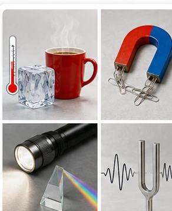
Warum verändert Wärme unsere Welt?
Was haben Eis, eine Thermoskanne und eine Brückenfuge gemeinsam?
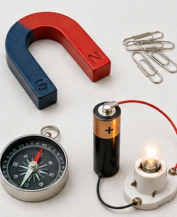
Was bringt Dinge zum Leuchten und Magnete zum Ziehen?
Wie hängen Batterie, Lampe, Kompass und Magnet zusammen?
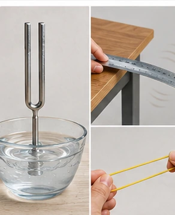
Kann man Schall sehen?
Was schwingt, wenn wir einen Ton hören?

Wie gelangt ein Bild in unser Auge?
Warum sehen wir einen Gegenstand erst, wenn Licht von ihm ins Auge gelangt?
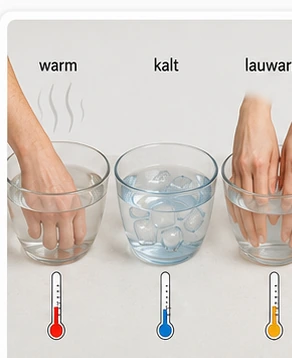
Kann deine Hand Temperaturen messen?
Warum können sich beide Hände im selben Wasser unterschiedlich fühlen?
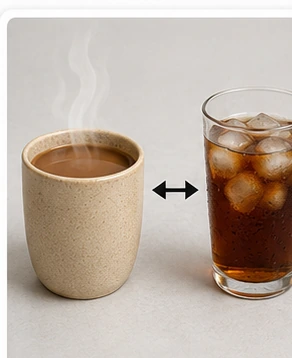
Warum wird Kakao kalt und Eiswasser warm?
In welche Richtung wird Energie beim Temperaturausgleich übertragen?
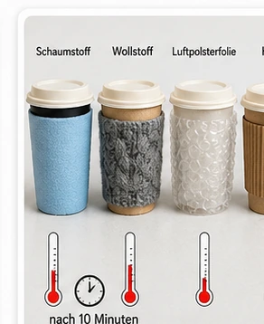
Wie kommt Wärme von hier nach dort?
Welches Material hält einen warmen Becher am längsten warm?
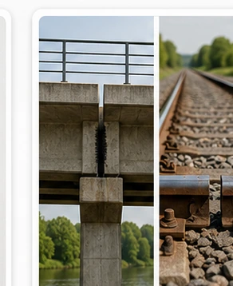
Warum brauchen Brücken Lücken?
Was verändert sich, wenn Stoffe erwärmt werden?
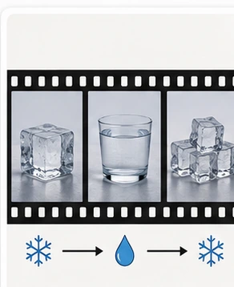
Fest, flüssig oder gasförmig?
Wie kann derselbe Stoff verschiedene Zustände besitzen?
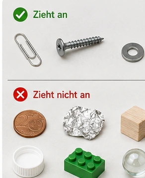
Was zieht ein Magnet wirklich an?
Welche Stoffe reagieren auf einen Magneten?
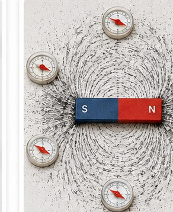
Unsichtbare Magnetfelder sichtbar machen
Wie zeigt ein Kompass die Richtung eines Magnetfeldes?
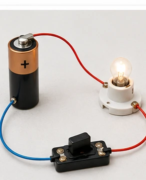
Wie leuchtet eine Lampe?
Welche Verbindungen braucht eine Lampe?
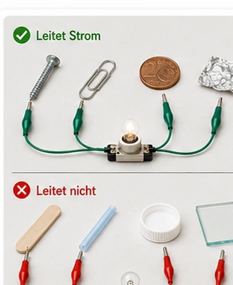
Was leitet elektrischen Strom?
Welche Stoffe schließen die Lücke im Prüfstromkreis?
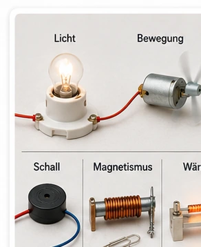
Was kann elektrischer Strom bewirken?
Welche Wirkungen erkennst du an Alltagsgeräten?
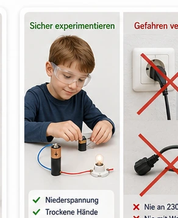
Sicher mit Strom umgehen
Welche Regeln schützen beim Experimentieren und im Alltag?
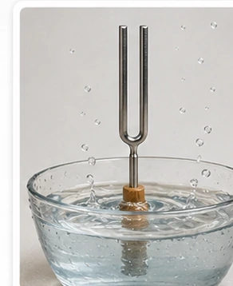
Wie entsteht ein Ton?
Welche Bewegung steckt hinter einem Ton?
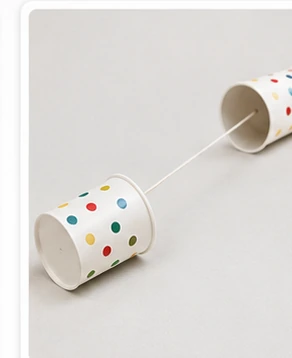
Wie kommt der Schall zum Ohr?
Was wird beim Schnurtelefon weitergegeben?
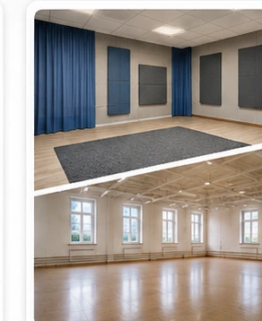
Warum hallt es und warum helfen Vorhänge?
Welche Oberflächen werfen Schall zurück und welche schlucken ihn?
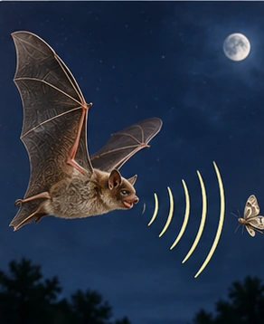
Töne, die wir nicht hören können
Welche Schallbereiche nutzen Tiere und Technik?
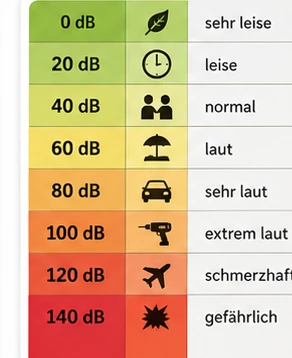
Wann wird Schall zu Lärm?
Wie schützen wir unser Gehör?
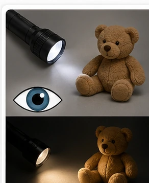
Warum können wir Dinge sehen?
Muss ein Gegenstand selbst leuchten?
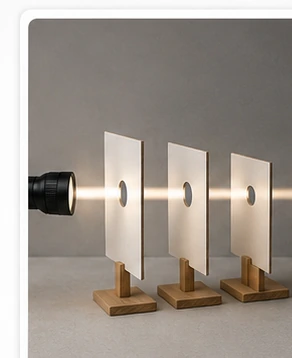
Geht Licht um die Ecke?
Was zeigt der Lochkartenversuch?
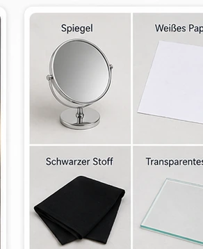
Was passiert mit Licht an einer Oberfläche?
Warum sehen Spiegel, Papier, Glas und schwarzer Stoff verschieden aus?
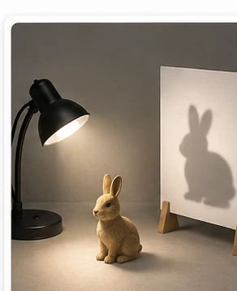
Wie entstehen Schatten und Bilder?
Wie verändern Abstände Schatten und Lochkamerabild?
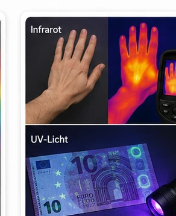
Licht, das wir nicht sehen
Wie können unsichtbare Strahlungsarten nachgewiesen werden?